Contents
Unconstrained optimization
first, define a test function:
clc, rosen = @(x) ( (1-x(1))^2 + 105*(x(2)-x(1)^2)^2 ) /1e4;
This is the classical Rosenbrück function, which has a global minimum at 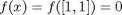. The function is relatively hard to minimize, because that minimum is located in a long narrow ``valley'':
k = 0; range = -5:0.05:5;
z = zeros(numel(range));
for ii = range
m = 0; k = k + 1;
for jj = range
m = m + 1;
z(k, m) = rosen([ii, jj]);
end
end
[y, x] = meshgrid(range, range);
S = surf(x, y, z, 'linestyle', 'none'); view(-213, 38), axis tight
shading interp, material metal, lighting gouraud, colormap('hot')
light('style', 'local', 'position', [-3 0 5]);
set(S, 'ambientstrength', 0.8)
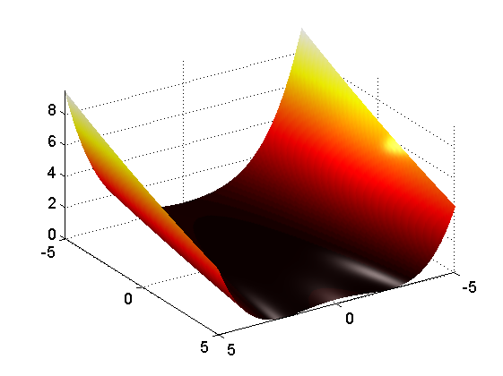 Optimizing the fully unconstrained problem with minimize indeed finds the global minimum:
solution = minimize(rosen, [3 3])
solution =
9.999779492786837e-001 9.999535409003786e-001
Optimization with bound constraints
Imposing a lower bound on the variables gives
[solution, fval] = minimize(rosen, [3 3], [],[], [],[], [2 2])
solution =
2.000000000528625e+000 3.999991976788512e+000
fval =
1.000000007819864e-004
in the figure, this looks like
zz = z; zz(x > 2 & y > 2) = inf;
ZZ = z; ZZ(x < 2 & y < 2) = inf;
figure, hold on
S(1) = surf(x, y, zz, 'linestyle', 'none', 'FaceAlpha', 0.2);
S(2) = surf(x, y, ZZ, 'linestyle', 'none');
plot3(solution(1), solution(2), fval+0.5, 'gx', ...
'MarkerSize', 20,...
'linewidth', 5)
xlabel('X(1)'), ylabel('X(2)')
view(-196, 38), grid on, axis tight
shading interp, material metal, lighting gouraud, colormap('hot')
light('style', 'local', 'position', [-3 0 5]);
set(S, 'ambientstrength', 0.8);
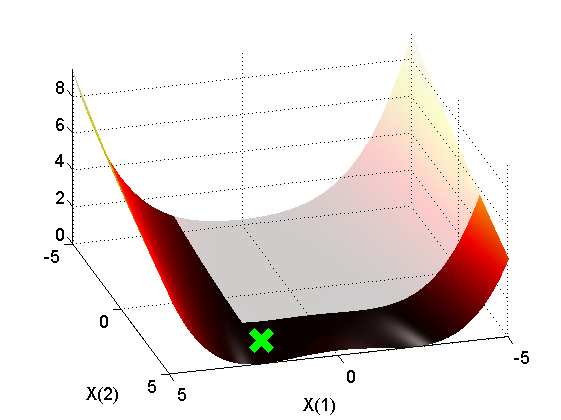 Similarly, imposing an upper bound yields
solution = minimize(rosen, [3 3], [],[], [],[], [],[0.5 0.5])
zz = z; zz(x < 0.5 & y < 0.5) = inf;
ZZ = z; ZZ(x > 0.5 & y > 0.5) = inf;
figure, hold on
S(1) = surf(x, y, zz, 'linestyle', 'none', 'FaceAlpha', 0.2);
S(2) = surf(x, y, ZZ, 'linestyle', 'none');
plot3(solution(1), solution(2), fval+0.5, 'gx', ...
'MarkerSize', 20,...
'LineWidth', 5);
xlabel('X(1)'), ylabel('X(2)')
view(201, 38), grid on, axis tight
shading interp, material metal, lighting gouraud, colormap('hot')
light('style', 'local', 'position', [-3 0 5]);
set(S, 'ambientstrength', 0.8);
solution =
4.999999984348473e-001 2.499977662682127e-001
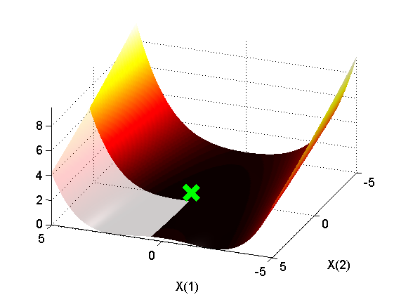 Minimize with 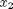 fixed at 3. In this case, minimize simply removes the variable before fminsearch sees it, essentially reducing the dimensionality of the problem. This is particularly useful when the number of dimensions N becomes large.
minimize(rosen, [3 3], [],[], [],[], [-inf 3], [inf 3])
ans =
1.731445312499997e+000 3.000000000000000e+000
Linear constraints
You can use linear inequality or equality constraints. For example, with the constraints
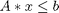,
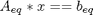,
with A = [+2 +1], b = -2 and Aeq = [+1 -1], beq = -2
minimize() finds the following result:
[solution, fval] = minimize(rosen, [3;3], [2 1],-2, [1 -1],-2)
solution =
-1.333351464194111e+000
6.666487473804754e-001
fval =
1.350896218141616e-002
These constraints look like the following:
xinds = 2*x+y <= -2;
zz = z; zz( xinds ) = inf;
ZZ = z; ZZ(~xinds ) = inf;
Ax = z; Axinds = abs(2*x+y + 2) < 1e-3;
[x1, sortinds] = sort(x(Axinds));
Ax = Ax(Axinds); Ax = Ax(sortinds);
y1 = y(Axinds); y1 = y1(sortinds);
Aeq = z; Aeqinds = abs(x-y + 2) < 1e-3;
[x2, sortinds] = sort(x(Aeqinds));
Aeq = Aeq(Aeqinds); Aeq = Aeq(sortinds);
y2 = y(Aeqinds); y2 = y2(sortinds);
figure, hold on
l1 = line([x1(1:end-1)';x1(2:end)'],[y1(1:end-1)';y1(2:end)'],[Ax(1:end-1)';Ax(2:end)']);
l2 = line([x2(1:end-1)';x2(2:end)'],[y2(1:end-1).';y2(2:end)'],[Aeq(1:end-1).';Aeq(2:end)']);
S(1) = surf(x, y, zz, 'linestyle', 'none', 'FaceAlpha', 0.2);
S(2) = surf(x, y, ZZ, 'linestyle', 'none');
l3 = plot3(solution(1)+0.4, solution(2)+0.8, fval+0.5, 'gx',...
'MarkerSize', 20,...
'LineWidth', 5);
set(l1, 'color', 'b', 'linewidth', 2);
set(l2, 'color', 'k', 'linewidth', 2);
view(150, 30), grid on, axis tight
xlabel('X(1)', 'interpreter', 'LaTeX'); ylabel('X(2)', 'interpreter', 'LaTeX');
k = legend([l1(1); l2(1); l3],'inequality $$A\mathbf{x} \leq -2$$', ...
'equality $$A_{eq}\mathbf{x} = -2$$', 'Solution');
set(k, 'interpreter', 'LaTeX', 'location', 'NorthWest');
shading interp, material metal, lighting phong, colormap('autumn')
light('style', 'local', 'position', [-3 0 5]);
set(S, 'ambientstrength', 0.8);
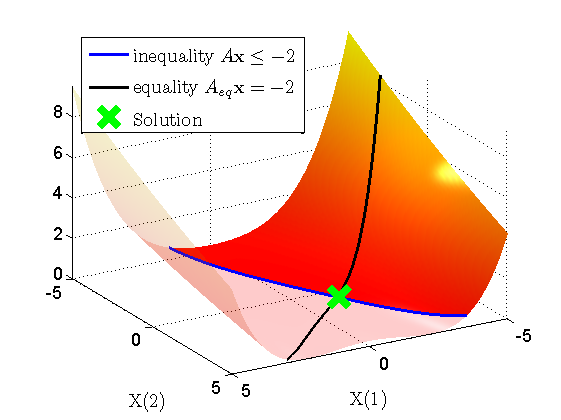 Non-linear constraints
Also general nonlinear constraints can be used. A simple example:
nonlinear inequality:
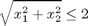
nonlinear equality :
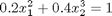
options = setoptimoptions(... 'TolFun', 1e-6, ... 'TolX' , 1e-6, ... 'MaxFunEvals', inf,... 'MaxIter', 1e4); [sol, fval, exitflag, output] = minimize(rosen, [-3; 3], [],[], [],[],... [],[], @nonlcon, options);
Note that nonlcon is a subfunction, listed below.
These constraints look like the following:
zz = z; zz(sqrt(x.^2 + y.^2) <= 2) = inf;
ZZ = z; ZZ(sqrt(x.^2 + y.^2) >= 2.2) = inf;
zZ = z; zZ(x.^2 + y.^3 >= 1.0 + 0.1) = inf;
zZ(x.^2 + y.^3 <= 1.0 - 0.1) = inf;
xX = x(isfinite(zZ)); [xX, inds] = sort(xX);
yY = y(isfinite(zZ)); yY = yY(inds);
zZ = zZ(isfinite(zZ)); zZ = zZ(inds);
figure, hold on
S(1) = surf(x, y, zz, 'linestyle', 'none', 'FaceAlpha', 0.2);
S(2) = surf(x, y, ZZ, 'linestyle', 'none');
L = line([xX(1:end-1)';xX(2:end)'],[yY(1:end-1)';yY(2:end)'],[zZ(1:end-1)';zZ(2:end)']);
l3 = plot3(sol(1)+0.4, sol(2)+0.5, fval+1, 'gx', 'MarkerSize', 20, 'linewidth', 5);
set(L, 'linewidth', 2, 'color', 'b');
view(150, 50), grid on, axis tight
k = legend([S(2); L(1); l3],'non-linear inequality $$c(x) < 0$$', ...
'non-linear equality $$c_{eq}(x) = 0$$', 'Solution');
set(k, 'interpreter', 'LaTeX', 'location', 'NorthWest');
shading interp, material metal, lighting phong, colormap('autumn')
light('style', 'local', 'position', [-3 0 5]);
set(S, 'ambientstrength', 0.8);
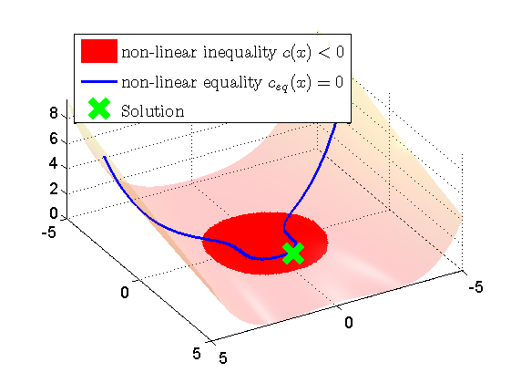 Note that the output structure contains a field constrviolation:
output
output =
iterations: 2402
algorithm: 'Nelder-Mead simplex direct search'
message: [1x340 char]
ObjfuncCount: 4425
ConstrfuncCount: 4426
constrviolation: [1x1 struct]
The contents of which shows that all constraints have been satisfied:
output.constrviolation
output.constrviolation.nonlin_eq{:}
output.constrviolation.nonlin_ineq{:}
ans =
nonlin_eq: {2x1 cell}
nonlin_ineq: {2x1 cell}
ans =
1
ans =
1.290913642648661e-008
ans =
0
ans =
0
Global optimization
This is the 2D sine-envelope-sine function. It has a single global minimum at [0,0], where the function assumes a value of 0. As you can imagine, it is hard to find this minimum when the initial estimates is not very close to the minimum already:
sinenvsin = @(x) 3*sum( (sin(sqrt(x(:).'*x(:))).^2 - 0.5)./(1 + 0.001*x(:).'*x(:)).^2 + 0.5, 1);
figure, hold on
k = 0; range = -10:0.1:10;
z = zeros(numel(range));
for ii = range
m = 0; k = k + 1;
for jj = range
m = m + 1;
z(k,m) = sinenvsin([ii jj]);
end
end
[y, x] = meshgrid(range, range);
S = surf(x, y, z, 'linestyle', 'none');
axis equal, view(-148,24)
shading interp, material shiny, lighting phong , colormap('autumn')
light('style', 'local', 'position', [-3 0 5]);
set(S, 'ambientstrength', 0.6);
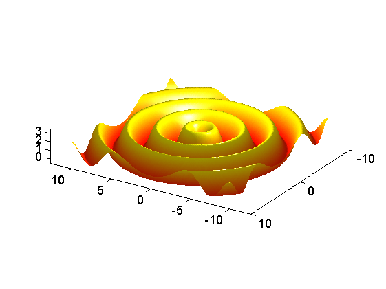 minimize() provides rudimentary support for this type of problem. Omitting the initial value x0 will re-start minimize() several times at randomly chosen initial values in the interval [lb ub]:
options = setoptimoptions(... 'popsize', 1e2, 'maxfunevals', 1e4, 'maxiter', 1e2); [sol,fval] = minimize(sinenvsin, [], [],[], [],[], -[5 5], +[5 5], [],options)
sol =
8.819312347263519e-005 4.062807372839927e-005
fval =
2.831428808081071e-008
Naturally, these types of problems may also have constraints:
[solution,fval] = minimize(sinenvsin, [], [2 1],-2, [1 -1],-2,... -[5;5], +[5;5], [], options); xinds = 2*x+y <= -2; zz = z; zz( xinds ) = inf; ZZ = z; ZZ(~xinds ) = inf; Ax = z; Axinds = abs(2*x+y + 2) < 1e-3; [x1, sortinds] = sort(x(Axinds)); Ax = Ax(Axinds); Ax = Ax(sortinds); y1 = y(Axinds); y1 = y1(sortinds); Aeq = z; Aeqinds = abs(x-y + 2) < 1e-3; [x2, sortinds] = sort(x(Aeqinds)); Aeq = Aeq(Aeqinds); Aeq = Aeq(sortinds); y2 = y(Aeqinds); y2 = y2(sortinds); figure, hold on S(1) = surf(x, y, zz, 'linestyle', 'none', 'FaceAlpha', 0.2); S(2) = surf(x, y, ZZ, 'linestyle', 'none'); l1 = line([x1(1:end-1)';x1(2:end)'],[y1(1:end-1)';y1(2:end)'],[Ax(1:end-1)';Ax(2:end)']); l2 = line([x2(1:end-1)';x2(2:end)'],[y2(1:end-1).';y2(2:end)'],[Aeq(1:end-1).';Aeq(2:end)']); l3 = plot3(solution(1)+0.5, solution(2)+2.8, fval+2, 'gx', 'MarkerSize', 20, 'linewidth', 5); xlabel('X(1)', 'interpreter', 'LaTeX'); ylabel('X(2)', 'interpreter', 'LaTeX'); set(l1, 'color', 'r', 'linewidth', 2); set(l2, 'color', 'k', 'linewidth', 2); view(150, 30), grid on, axis tight k = legend([l1(1); l2(1); l3],'inequality $$A\mathbf{x} \leq -2$$', ... 'equality $$A_{eq}\mathbf{x} = -2$$', 'Solution'); set(k, 'interpreter', 'LaTeX', 'location', 'NorthWest'); view(170,80); shading interp, material shiny, lighting phong, colormap('autumn') light('style', 'local', 'position', [-3 0 5]); set(S, 'ambientstrength', 0.6);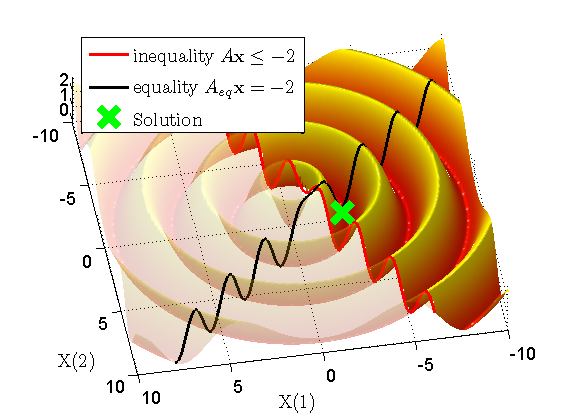
Different algorithm: fminlbfgs
minimize() also supports fminlbfgs, a limited-memory, Broyden/Fletcher/Goldfarb/Shanno optimizer, implemented by Dirk-Jan Kroon. Unlike fminsearch(), this algorithm uses gradient information to improve the overall optimization speed:
options = setoptimoptions(... 'Algorithm', 'fminsearch'); [solution, fval, exitflag, output] = minimize(... rosen, [-3 -18], [],[], [],[], [],[], [], options); solution, fval output.funcCount options = setoptimoptions(... 'Algorithm', 'fminlbfgs'); [solution, fval, exitflag, output] = minimize(... rosen, [-3 -18], [],[], [],[], [],[], [], options); solution, fval output.funcCount
solution =
1.000004532655050e+000 1.000006749626582e+000
fval =
5.836059191618274e-014
ans =
196
solution =
1.000012840436605e+000 1.000017577323999e+000
fval =
7.060245922779116e-013
ans =
162
As can be seen, fminlbfgs() indeed uses less funtion evaluations to come to a comparable answer.
The great advantage of this minimizer over fminsearch() is that fminlbfgs() can handle very large problems efficiently. For problems of higher dimensionality, fminsearch() has poor convergence properties compared to fminlbfgs().
Supplying gradients to fminlbfgs
fminlbfgs() needs gradient information of both the objective and non-linear constraint functions. minimize() estimate this information numerically via finite differences, but this can be costly for larger problems. Therefore, minimize() can also accept gradient information computed by the objective funcion:
options = setoptimoptions(... 'TolX', 1e-8,... 'TolFun', 1e-8,... 'FinDiffType', 'central',... 'MaxFunEvals', inf,... 'MaxIter', 1e4,... 'GoalsExactAchieve', 0,... 'Algorithm', 'fminlbfgs',... % This option specifies that your 'GradObj' , 'on'); % objective function also provides % gradient information as its second % output argument [solution, fval, exitflag, output] = minimize(... @rosen_with_gradient, [-3 -3], [],[], [],[], [],[], @nonlcon, options); solution, fval output.ObjfuncCount output.ConstrfuncCount
In case of non-linearly constrained problems, also Jacobian information of the non-linear constraint function can be provided:
options = setoptimoptions(... 'TolX', 1e-10,... 'TolFun', 1e-10,... 'MaxFunEvals', inf,... 'MaxIter', 1e4,... 'GoalsExactAchieve', 0,... 'Algorithm' , 'fminlbfgs',... % This option specifies that your 'GradObj' , 'on',... % non-linear constraint function also 'GradConstr', 'on'); % provides Jacobian information as its % third and fourth output arguments [solution, fval, exitflag, output] = minimize(... @rosen_with_gradient, [-3 -3], [],[], [],[], [],[], @nonlcon_with_Jacobian, options); solution, fval output.ObjfuncCount output.ConstrfuncCount
solution =
4.575590956156075e-001 1.338147855799337e+000
fval =
1.340811773195559e-002
ans =
508
ans =
509
See also
end
function [fVal, gVal] = rosen_with_gradient(x) fVal = ( (1-x(1))^2 + 105*(x(2)-x(1)^2)^2 ) /1e4; gVal = [ -2*(1-x(1)) - 4*105*x(1)*(x(2)-x(1)^2) 2*105*(x(2)-x(1)^2) ]/1e4; end function [c, ceq] = nonlcon(x) c = x(1)^2 + x(2)^2 - 2; ceq = 0.2*x(1)^2 + 0.4*x(2)^3 - 1; end function [c, ceq, c_Jac, ceq_Jac] = nonlcon_with_Jacobian(x) c = x(1)^2 + x(2)^2 - 2; ceq = 0.2*x(1)^2 + 0.4*x(2)^3 - 1; c_Jac = 2*x; ceq_Jac = [0.4*x(1); 1.2*x(2)^2]; end
solution =
4.581537275933739e-001 1.337944382211403e+000
fval =
1.339032847543977e-002
ans =
420
ans =
421